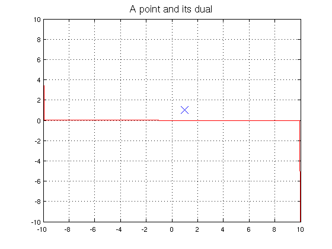
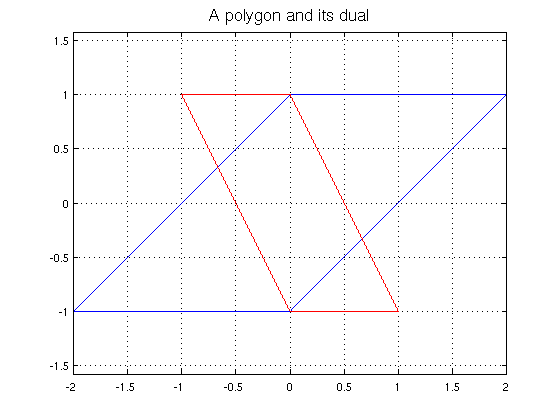
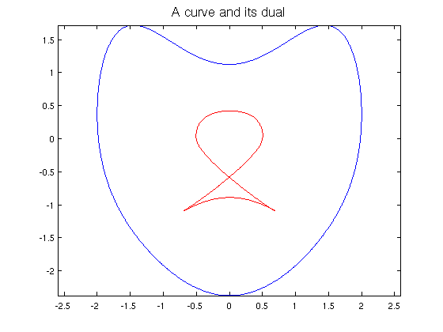

Dual points, lines, polygons and curves
Alex Townsend, August 2011
(Chebfun example geom/DualCurves.m)
function DualCurves
In geometry many statements have an equally valid dual statement [1,2]. For example, "Two non-parallel lines intersect at exactly one point" is dual to "Two distinct points are joined by exactly one line" and "Three points lie on a line iff they are collinear" is dual to "Three lines meet at a point iff they are concurrent".
The dual of a point is a line: the point (a,b) is the dual to the line with gradient -a/b going through (-a/(a^2+b^2),-b/(a^2+b^2)). Conversely, the dual of a line is a point: the line y=mx+c is dual to the point (m/c,-1/c).
FS = 'FontSize'; MS = 'MarkerSize'; a = 1; b = pi/3; dual = chebfun(@(x) -(a/b)*x-1/b,[-inf,inf]); plot(a,b,'x',MS,16), hold on, plot(dual,'r'), grid on axis([-10 10 -10 10]), title('A point and its dual',FS,16), hold off
A polygon consists of edges (lines) and vertices (points). The dual of an edge is a point and the dual of a vertex is a line. Hence the dual of a polygon is also a polygon. In particular, odd-sided regular polygons are self-dual.
t = chebfun('x',[0,1]); vertices = [-2-1i 0-1i 2+1i 0+1i]; polygon = (1-t)*vertices + t*circshift(vertices',-1)'; plot(polygon,'b'), hold on, axis equal, grid on dual = DualOfPolygon(vertices); plot(dual,'r') title('A polygon and its dual',FS,16), hold off
A curve is the limit of piecewise linear curves, so we can extend the definition of dual to curves. Given any curve C, the dual curve is the set of points which are dual to the tangent lines of C. Given any parameterised curve, there is a simple formula to compute its dual curve. Here is the dual of a smoothed heart-shaped curve.
t = chebfun('x',[0,2*pi]); x = 2*sin(t); y = 2*cos(t)-(1/2)*cos(2*t)-(1/4)*cos(3*t)-(1/8)*cos(4*t); plot(x+1i*y), hold on, axis equal, plot(DualOfCurve(x+1i*y),'r'); title('A curve and its dual',FS,16)
Here are the functions which were used to compute the duals:
function g = DualOfPolygon(v) %DUALOFPOLYGON(V), computes dual polygon. v is array of complex-valued %vertices of the polygon. g is a chebfun parameterising the dual %polygon. w = circshift(v',-1)'; gradient = (imag(v)-imag(w))./(real(v)-real(w)); intercept = imag(v)-gradient.*real(v); poly = (1./intercept).*(gradient-1i); %If edge is vertical replace NaN/Inf with dual point. poly(isnan(poly)) = -real(v(isnan(poly))); poly(isinf(poly)) = -real(v(isinf(poly))); %Add in final edge of polygon. poly = [poly, poly(1)]; s = chebfun('x',[0,1]); p = (1-s)*poly + s*circshift(poly',-1)'; %Concatenate chebfuns together. g = p(:,1); for k=2:length(poly)-1, g=[g;p(:,k)]; end end function g = DualOfCurve(f) %DUALOFCURVE(F), computes dual curve. % f is complex-valued chebfun parameterising a smooth curve. g is a % chebfun parameterising the dual curve. rl = real(f); im = imag(f); %Calculate parameterisation for dual curve. p = -diff(im)./(diff(rl).*im-rl.*diff(im)); q = diff(rl)./(diff(im).*rl-im.*diff(rl)); g = p+1i*q; end
References
[1] Wikipedia, "Dual curve", http://en.wikipedia.org/wiki/Dual_curve
[2] Wikipedia, "Dual polygon", http://en.wikipedia.org/wiki/Dual_polygon
end